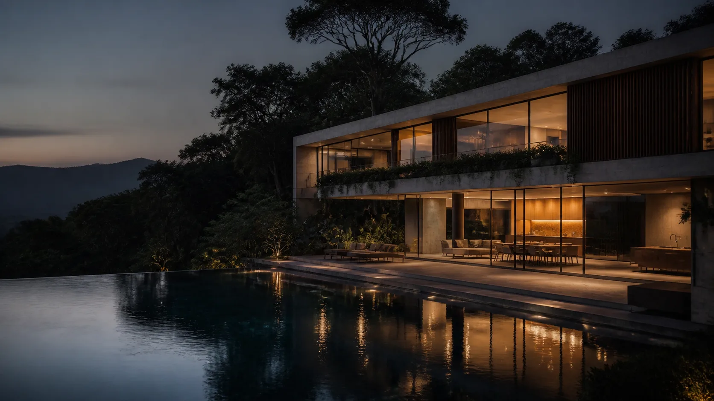

Mais procurado
Regularização na prefeitura
Levantamento do imóvel, plantas, memorial, ART e acompanhamento do processo até a aprovação.
- Indicado para
- venda, financiamento, averbação e habite-se
Folha 01Documentação